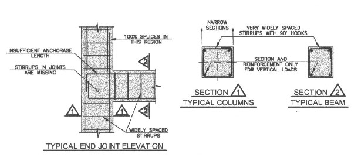
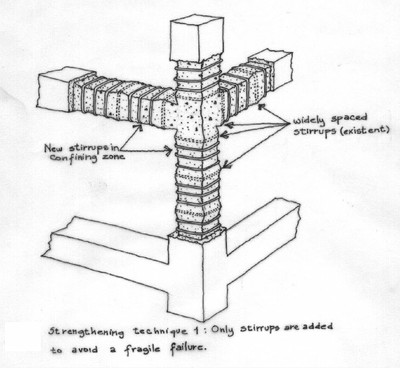
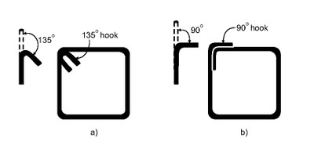
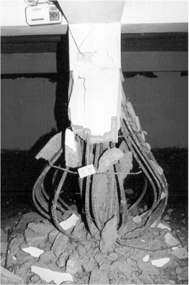
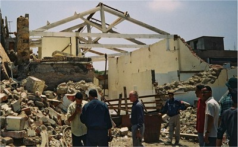

Non-ductile [DNO]
Steel members and steel reinforcing are not designed nor constructed to undergo plastic deformation before failure under earthquake loads. In the event of over-load during an earthquake structural members are expected to suffer brittle failure. For example, moment frames with weak columns and strong beams are non-ductile because once the columns are damaged they usually are unable to resist gravity loads. Reinforced concrete frames will also be classified as non-ductile if beam and column ties have 90 degree rather than 135 degree hooks, and if there is insufficient quantity and spacing of shear reinforcement to prevent shear failure before flexural failure.
Unreinforced masonry buildings usually demonstrate non-ductile performance in earthquakes.

Details of a non-ductile reinforced concrete frame at critical locations: beam-column joint, beam and column (Colombia, World Housing Encyclopedia Report 11)

Widely spaced transverse reinforcement (ties in columns and stirrups in beams) are characteristic for non-ductile reinforced concrete frame; this isometric drawing shows a possible seismic strengthening technique (Colombia, World Housing Encyclopedia Report 11)

Ties in reinforced concrete columns: a) 135 degree hooks (ductile detailing), and b) 90 degree hooks (non-ductile detailing) (Brzev, S. and Pao, J. Reinforced Concrete Design: A Practical Approach, Pearson Learning Solutions, 2012)


Failure of reinforced concrete columns at the ground floor level of a building with the soft storey irregularity in the 2001 Bhuj, India earthquake; the columns were characterized by non-ductile details, such as widely spaced ties and 90 degree hooks in ties (C.V.R. Murty, EERI)

Failure at the base of a reinforced concrete column due to 90 degree hooks and widely spaced ties was observed in the 1999 Chi Chi, Taiwan earthquake; use of 90 degree hooks is a feature of non-ductile concrete construction (EERI)

Older steel moment frame buildings were damaged in the 1994 Northridge, California earthquake due to non-ductile beam-column connections and weld fractures (EERI and Bay Area Regional Earthquake Preparedness Project, CAL-OES)

Damage of a poorly constructed confined masonry building in the 2010 Haiti earthquake; this is considered a non-ductile performance (A. Lang, EERI)

Unreinforced masonry buildings often show non-ductile performance and suffer damage in major earthquakes, such as the 2003 Boumerdes, Algeria earthquake (S. Brzev)